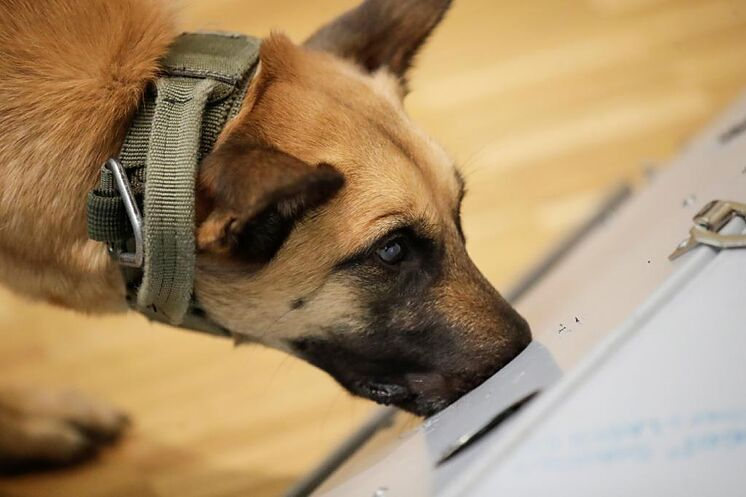
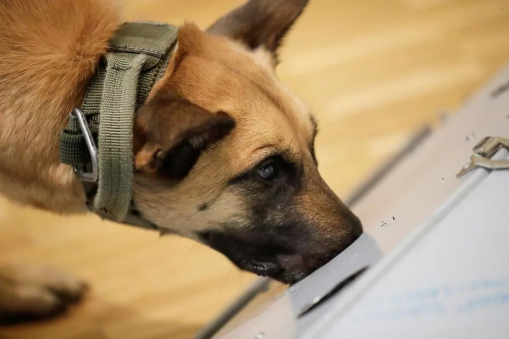

Perros adiestrados detectan el coronavirus en muestras de saliva con un 94% de probabilidad de acierto


Una clínica veterinaria alemana ha entrenado perros rastreadores para detectar el nuevo coronavirus en muestras de saliva humana con un 94% de precisión.Los perros son capaces de precibir el 'olor' que procede de las células de las personas infectadas, según Esther Schalke, veterinaria de la escuela de perros de servicio de las Fuerzas Armadas de Alemania.
Filou, un pastor alemán de 3 años, y Joe Cocker, un cocker spaniel de 1 año, son dos de los perros que se entrenan en la Universidad de Medicina Veterinaria de Hannover.
'Hicimos un estudio en el que teníamos perros olfateando muestras de pacientes positivos por Covid y podemos decir que tienen un 94% de probabilidad en nuestro estudio de que puedan olfatearlos', ha asegurado Holger Volk, director de la clínica veterinaria.'De modo que los perros realmente pueden olfatear a las personas con y sin infecciones, así como a los pacientes con Covid asintomáticos y sintomáticos', ha añadido.
Stephan Weil, primer ministro de Baja Sajonia, el estado cuya capital es Hannover, se ha confesado impresionado con el estudio y ha pedido pruebas de viabilidad antes de que los perros rastreadores se utilicen en la vida cotidiana, como por ejemplo con personas que asisten a conciertos.'Ahora necesitamos pruebas en acontecimientos seleccionados', ha dicho Weil.
En Finlandia, perros adiestrados comenzaron a olfatear muestras de pasajeros en el aeropuerto de Helsinki-Vantaa de Finlandia en septiembre pasado, en un proyecto piloto que añadía esa prueba a otras más habituales.El aeropuerto internacional de Santiago de Chile también está utilizando detectores caninos.
Posted On: 2021-02-03T19:04:00
Content Date: 2021-02-03
Download Date: 2021-04-08
Document ID: L0C049L7S